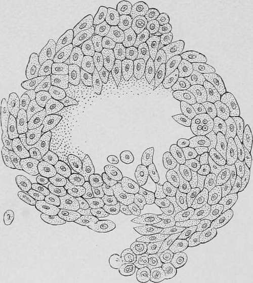
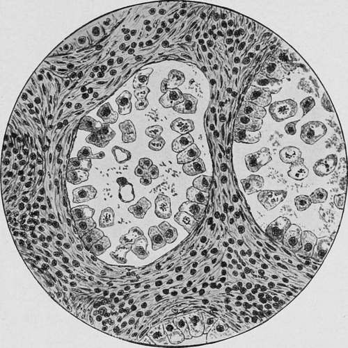

Microscopical Examination Of The Contents Of The Stomach. Micro-Organisms
Description
This section is from the book "Cancer And Other Tumours Of The Stomach", by Samuel Fenwick. Also available from Amazon: Cancer and other tumours of the stomach.
Microscopical Examination Of The Contents Of The Stomach. Micro-Organisms
In addition to various kinds of undigested food, vast quantities of torulse and other fungi may usually be observed in the residue upon the filter. It was formerly believed that the presence of sarcinae was indicative of cancer of the pylorus; but it is now known that, far from being pathognomonic of the complaint, they occur quite as often in cases of benign stenosis as in malignant disease. Of greater importance are the so-called Oppler-Boas bacilli. These are long, rodshaped, non-motile organisms, which are often thicker at one end than the other, and can easily be recognised in stained cover-slip preparations. Like many other fungi met with in the stomach, they excite lactic acid fermentation of carbohydrates, and consequently often exist in enormous numbers when the organ is affected by a neoplasm. They were observed in nearly 90 per cent, of the cases of gastric cancer examined by Oppler, Kauffmann and Schlesinger, Riegel, and Hemmeter and Adler.
Fragments of Tumour and Cancer Cells. -It has already been remarked that during the process of disintegration fragments of the growth are apt to become detached, and may be occasionally recognised in the vomit. Several cases have come under our own observation where the discovery of pieces of new growth in the ejecta served to confirm the diagnosis ; and Mathieu has recently observed one in which three pieces of epitheliomatous tissue were eliminated in the vomit In most of these cases, however, the tumour has already reached a considerable size and is accompanied by such pronounced symptoms that its recognition is not attended by any difficulty.
On the other hand, there is reason to believe that even at an early period of the complaint minute conglomerations of cells, strips of mucous membrane from the vicinity of the growth, or isolated cells showing atypical mitoses, are often spontaneously detached, and may be recognised by a systematic examination of the gastric contents.
(a) Microscopic aggregations of cancer cells have been described by many writers, but they are not always easy to recognise, on account of the similarity that exists between them and the particles of epithelium that are habitually shed in cases of chronic gastritis. When, however, the cells present the appearance of concentric cell-nests, they constitute strong evidence of the existence of a neoplasm.
(b) In order to obtain shreds of mucous membrane or isolated cells from the stomach, certain precautions have to be taken. In the first place, the stomach should be empty at the time of the examination, since the presence of undigested food constitutes a formidable obstacle to their recognition. The viscus should, therefore, be carefully washed out in the evening, and no food be permitted until after lavage on the following morning; while in some cases it may be necessary to perform the preliminary cleansing several times and to feed the patient by the rectum for two or three days. As a rule a soft tube of medium calibre is sufficient for all purposes ; but Hemmeter prefers one in which the terminal orifice is provided with sharp edges which can scrape or ' curette' the gastric mucosa. About half a pint of warm normal saline solution is poured into the viscus through the tube, which is then alternately inserted to its full extent and partially withdrawn until its point has been brought into contact with the greater part of the mucous membrane. A second half-pint of saline solution is then introduced, after which the whole is rapidly siphoned off into a conical glass and allowed to stand for two or three hours. The sediment is then placed in a centrifugal machine and the ultimate deposit stained and examined by the microscope.
Fig. 35.-Drawing of a small mass of carcinomatous tissue expelled from the stomach. (Ewald.).
Fig. 36.-Fragment of gastric mucosa obtained by curettage, showing the lumen of two gland tubules. The interglandular connective tissue is thickened and permeated with small round-celled filtration. The greater portion of the epithelium of the gland is detached; many cells show vacuoles, some of them so large as to submerge the identity of the original cell, which appears either as a small rim of protoplasm around a vacuole or as a smaller mass at the side of a huge vacuole. Numerous gland cells are in the state of atypical mitosis. There are in both asymmetrical mitoses, some with disrupted chromosomes. In the centre of one lumen is a four-lobed cell presenting four nuclei. Asymmetrical mitoses do not derive their name from asymmetry in shape or configuration; an asymmetrical mitosis is one whose daughter-stars do not contain a like or even number of chromosomes. (Hemmeter.).
Shreds of mucous membrane may be obtained in this manner in most cases of subacute and chronic gastritis ; but those which are met with in gastric cancer are stated to present two characteristic features : the peptic ducts are much elongated and dilated, and are separated from one another by an excess of connective tissue; while their cells are either partially or completely detached from the basement membrane, and exhibit karyokinetic figures of an asymmetrical form (figs. 37 and 38).
(c) Although atypical mitoses are common to all tissues which are undergoing rapid proliferation, their presence in cells derived from the stomach must be regarded as highly suggestive of a neoplasm. Eieder seems to have been the first to diagnose malignant disease of the peritoneum from the presence of a large number of cells displaying indirect division in the fluid withdrawn from the abdomen, and Dock was able to recognise cancer of the pleura and peritoneum in a similar manner. The cells present in the serous exudations in such cases were of various shapes and sizes, and frequently contained vacuoles large enough to displace or obscure the nucleus. Hemmeter, who has paid much attention to this subject, states that the forms of cell and nuclear division known as the equatorial plate and the monaster are frequently observed in the gastric cells obtained by lavage, and has published some diagrams (37 and 38) showing the various atypical mitoses that are encountered.
Continue to:
- prev: Lactic Acid
- Table of Contents
- next: Palpation